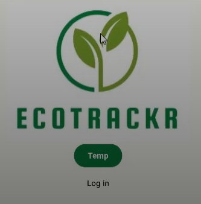
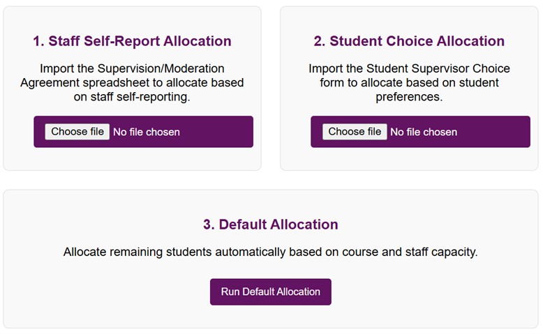

About
Hello! I'm Katelyn - I am a final-year Computer Science undergraduate student, set to graduate in July. Over the past two summers, I’ve interned at One Stop’s head office as a Technology Intern, where I contributed to the development of their scanning software - a tool now deployed across stores throughout the UK.
For my final-year dissertation, I built a web application that automates the assignment of supervisors and moderators to students, using JavaScript, React, and Firebase to streamline the process and improve efficiency.
I particularly enjoy working on projects that have a meaningful impact and real-life applications, which inspire me to create solutions that genuinely help others. This drive for practical, purpose-driven work is reflected in my choice of dissertation project, where I focused on addressing real-world challenges to make a positive difference.
Beyond coding, I enjoy baking and sports. I used to be a competitive swimmer but have now taken up running and am currently training for the Great South Run in October, where I’ll be raising money for the British Heart Foundation - a cause close to my heart.
Thank you for visiting my portfolio! Feel free to connect with me on GitHub or LinkedIn!
Skills
Projects
EcoTrackr
EcoTrackr is a carbon emission monitoring application that allows users to log their travel journeys - whether by car, train, or bus - and automatically calculates the carbon footprint of each journey.
The app encourages sustainable travel by introducing a competitive element: users are ranked on a leaderboard based on how low their emissions are. The lower a user's carbon output, the higher their rank, promoting environmentally friendly choices through gamification.
Final Year Project Management App
This web application was created for university administrators to automate the allocation of supervisors and moderators to student projects. The image above outlines the key steps in the allocation process:
- Step 1: Filter out staff who have already reached their allocation quota.
- Step 2: Compare each student’s course or project topic to staff interests using keyword matching.
- Step 3: Apply a scoring system to rank potential staff matches.
- Step 4: If multiple staff qualify equally, prioritise those with the fewest current allocations.
- Step 5: Finalise assignments and save results to Firestore.
Built using React, JavaScript, and Firebase, the system simplifies the administrative workload while ensuring fair and interest-based allocation.